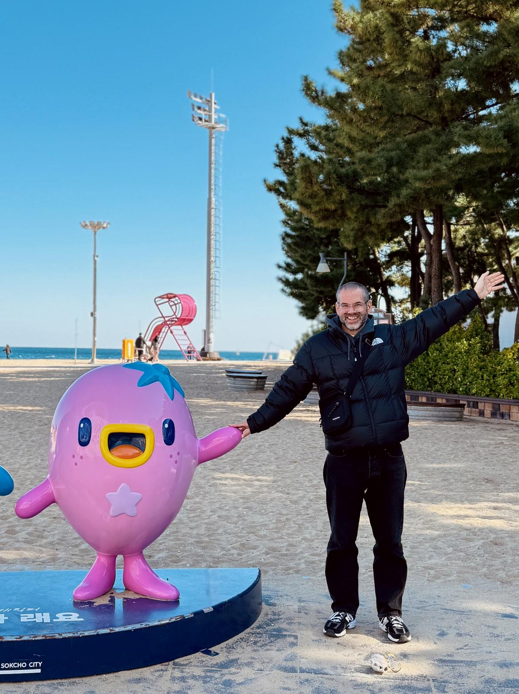

Hi, I’m Magnus. I live in London and work in Tech.
I’m originally from Sweden, but moved to the UK 19 years ago.
If you want to know a bit more about me, you may want to check out my interests below, my Now page or even my values.

My interests:
- Optimisation & curation — stationery, personal finances, possessions, computer setup and life in general
- Boating — grew up by the sea and still own a little rowing boat
- Digital projects — creating things digitally, like this blog
- Food — not cooking, but eating and drinking nice things
- Travel — a few trips per year, far or near
- Reading — sometimes a lot, sometimes not for several months, but nothing longer than 280 pages
- Art, design and music — admiring nice things created by others
About the blog
MXGNS is my non-professional and unprofessional personal blog. It is an expression of my longing for the Internet as it used to be, before the algorithms and the hunt for clicks and likes took over.
The blog is mainly a personal journal and a collection of photos, mixed with some random thoughts. I’m posting with myself as the primary audience, and the value I get is purely from creating something by myself.
If anyone comes across my posts, that’s nice, but if they don’t, that’s fine too.
Stats
This blog consists of 4,258 words and 53 images across 50 posts. It was last updated 21/7/26.
Contact
You can reach me on hello@mxgns.uk.
Credits
This blog uses icons by Font Awesome
Copyright
© Copyright 2026. All rights reserved.